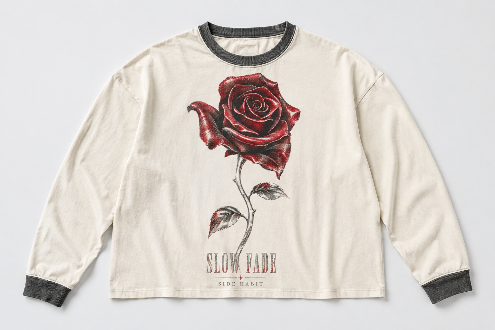

L’INTENTION / PAS UN SOUVENIR INVENTÉ
Le son s’arrête.
L’image reste.
Deux dessins originaux, un même chapitre : le mouvement d’une colombe, une rose rouge qui garde sa lumière. Des impressions patinées et des volumes amples, pensés comme les vêtements que l’on garde longtemps.
Il s’agit d’une intention créative. Ni longévité, ni matière, ni tenue au lavage ne sont encore validées sur échantillon.
